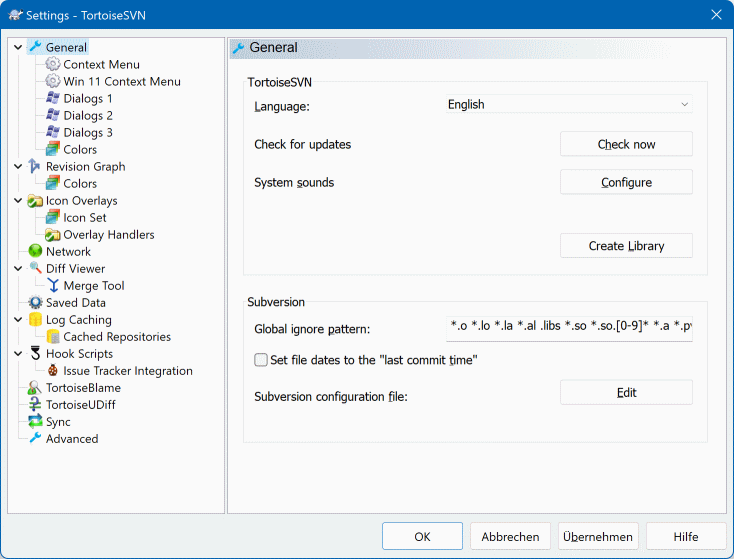

20用户与权限：谁能看谁能改
SVN 相比「大家共用一个共享盘」的最大优势，就是能精确控制权限： 谁能读哪个目录、谁能往哪个目录里写、谁连看都看不到，都可以一个一个仓库、一层一层目录地设定。 这一节在 VisualSVN Server Manager 里完成——建人、建组、发权限，全是勾选框和对话框。
- 保护主干：让新人或外包只能在自己的分支里改，主干不会被误伤。
- 保护发布：
tags目录设成只读，已经发出去的版本号永远不会被谁手滑改掉。 - 保护源码：核心模块只对内部成员开放，外包同学打开仓库根本看不到那些目录。
- 减少扯皮：权限写清楚，谁该做什么一目了然，比事后追责省事得多。
而且这些配置一次配好长期有效，不用每来一个人就重新折腾一遍。
第一步：给每个人建账号
服务器上的账号和 Windows 账号是两回事，是 VisualSVN 自己维护的名单。同事想连上你们的服务器，名字必须在这个名单里。
Users，在它上面右键。也可以直接用顶部工具栏的新建用户按钮。
Username 里填，建议用姓名的拼音、或者工号，别用网名或花名。用户名是能被别人看到的，以后排查「谁提交的」时全靠它对得上人。
Password 和 Confirm password，点 OK 完成。建好后把用户名和密码用私聊方式发给本人，让大家第一次连上后自己改掉。别在群里贴密码。
Properties，可以改密码、改描述。人员离职时不要删账号，而是把它的权限收回——删掉会让历史记录里的作者名对不上。
一是在 Users 里建账号（这一小节）；二是把账号加进对应的用户组或直接给权限（下面两个小节）。
两件都做完，他才能连上仓库。只建账号不给权限，客户端会一直提示认证失败或没有访问权限，其实不是密码错了。
第二步：建用户组，按角色管理
人一多，一个个给权限就会出现「漏掉一个人」「删掉一个人忘了收回」这类问题。正确做法是按角色建组，权限发给组，人员变动只改组。
Groups，右键，走 Groups → New → Group...。
Developers（开发）、Testers（测试）、Outsourcing（外包）、Admins（管理员）。名字起清楚了，几个月后回来看权限表还能一眼看懂。
Members 那一栏点 Add...，从已有的用户里勾选。一个用户可以同时属于多个组，比如一个技术负责人既在 Developers 也在 Admins。
第三步：给仓库分配权限
账号和组都准备好了，接下来才是真正决定「谁能看谁能改」的地方。入口在仓库的属性对话框里。
Repositories 这一层）上右键 → Properties。对你只想管某一个仓库时，就在这里配。
Security。这里列着当前已经授权的对象和他们的权限级别。刚建的新仓库，这里可能是空的。
Add... 按钮，弹出选择窗口，里面有 Users 和 Groups 两份名单。优先选组——实在临时才直接选个人。选好点确定，它就出现在列表里了。
Read Only 还是 Read/Write。权限是一次一行生效的，所以加一批人要逐行设一遍。
OK 保存。想让某个人只对某几个子目录有权限，就继续看下面的「精细权限」。
三种权限级别
| 权限 | 能做什么 | 什么时候给 |
|---|---|---|
| Read Only 只读 |
可以检出、可以更新、可以看历史和差异。不能提交，改了也传不上去。 | 给只浏览不参与开发的人：产品、美术、领导、外部评审。也用在 tags 这类「只许看、不许动」的目录上。 |
| Read/Write 读写 |
只读的全部都能做，另外可以提交、可以建分支和标签。 | 给真正要写代码的人：开发、以及需要维护脚本的测试。这是团队成员最常见的级别。 |
| No Access 无权限 |
连仓库都连不上，看不到任何内容，就像这个仓库不存在一样。 | 给不该看到这套代码的人。也用来「收回权限」——不删账号，直接改成无权限。它比 Read Only 更彻底：只读至少还能看见内容和历史。 |
很多人以为设成 Read Only 就安全了。其实只读的人能看到全部代码、全部历史和全部差异，只是不能改而已。
如果这套代码根本不该让某个角色看到（比如外包不该看到核心算法），必须用 No Access，或者用下面的精细权限把那个目录藏起来。
精细权限：细化到具体子目录
权限不是只能在仓库这一层设。你可以针对仓库里的某条路径单独配，路径越具体，优先级越高。这是 SVN 权限体系最有价值的部分。典型场景有三个。
场景一：tags 目录只许看，不许写
tags 是记录「已发布版本」的地方。它的意义就在于打上之后永远不动——一旦有人把里面的东西改了，你手上那个发布版本号就对不上代码了，线上出问题时完全没法追溯。
Security 标签页里，先给 Developers 组仓库级的 Read/Write。这是「默认值」，子目录会继承它。
/tags 这条子路径上，给 Developers 组设成 Read Only。界面上的做法是：编辑这条权限的适用路径，把它从「整个仓库」收窄到 tags。
/tags 路径加一条规则，对象是 Admins 组，级别 Read/Write。这样只有管理员能在 tags 下建标签，其他人看得见、动不了。
OK 关闭属性对话框。用普通成员账号在客户端里试着提交一次到 tags，应该被服务器拒绝；提交到 trunk 则正常。配完权限一定要实测一次，别只看配置界面。
同一个用户命中多条规则时，服务器按这个顺序判断：① 路径更具体的赢——/tags 上的规则会盖过仓库级的规则；② 针对人的赢过针对组的——直接给某人配的规则，优先于他所在组的规则；③ 都没命中就拒绝——默认是「不给」，所以必须显式授权。
理解这一点，「继承 + 局部覆盖」的玩法就通了：根上配一套通用的，个别目录写几条例外，整套权限清清楚楚。
场景二：外包只能看一部分代码
同一个仓库里，如果 /trunk/core 是核心算法，外包同学不应该看到，那就先给外包组整体 No Access，再为他能访问的那几条路径单独开 Read/Write。顺序是「先全部关掉，再逐个打开」，这样不会漏。
一张典型的权限矩阵
下面这个矩阵可以直接当作团队的起点抄下来，再按自己的情况微调。✔ 读写 表示能提交，只读 表示只能看，— 表示完全看不到。
| 目录 | 管理员 | 开发 | 测试 | 外包 |
|---|---|---|---|---|
/trunk主干 | ✔ 读写 | ✔ 读写 | 只读 | — |
/trunk/core核心模块 | ✔ 读写 | ✔ 读写 | 只读 | — |
/branches/dev-*开发分支 | ✔ 读写 | ✔ 读写 | 只读 | ✔ 读写 |
/branches/test-*测试分支 | ✔ 读写 | ✔ 读写 | ✔ 读写 | 只读 |
/tags发布标签 | ✔ 读写 | 只读 | 只读 | 只读 |
/docs文档 | ✔ 读写 | ✔ 读写 | ✔ 读写 | 只读 |
| 角色 | 对应的组 | 设计思路 |
|---|---|---|
| 管理员 | Admins | 所有路径读写，唯一能改 tags 的人。人数控制在 1~2 人。 |
| 开发 | Developers | 主干和自己的分支读写，tags 只读，保证发布记录不被误改。 |
| 测试 | Testers | 主干只读（随时对着最新代码验），测试分支可写（记录用例和报告）。 |
| 外包 | Outsourcing | 核心模块完全看不到，只在指定的开发分支里干活，交付通过合并或补丁回主仓库（第 22 节）。 |
你在仓库根上配的那一套，下面所有子目录默认全部继承——也就是说，Developers 在根上有读写，进到 trunk/src/login 一样有读写，不需要一层层去点。
- 先在仓库根上配一套通用的，覆盖 90% 的目录。工作量最小，也最不容易漏。
- 只对个别目录写例外：比如
/tags收紧成只读、/trunk/core对外包关闭。 - 例外越少越好。例外一多，几个月后连你自己都说不清谁到底能访问什么。权限表能一屏看完，才算配得好。
权限是在服务器端改的，但改动不会自动推到客户端。最常见的情况是：你刚给某个同事撤了权限，他那边却还能照常更新——因为他本机缓存着上次登录的凭据，服务器看的是旧会话。
让他这样做：在资源管理器空白处右键 → TortoiseSVN → Settings → 左侧选 Saved Data → 在 Authentication data 那一行点 Clear 按钮 → 确定关闭。
清完之后下一次操作会重新弹登录框，输入新的用户名密码即可。同样的做法也适用于「换了密码一直认证失败」这类问题（第 23、24 节还会再遇到）。
顺带提醒：改权限属于影响面比较大的操作，最好避开大家正在提交的时间段，改完在群里说一声。
去哪儿清凭据：Settings 面板认路
上面说的「清一次凭据」是在客户端做的，所以得先认识 TortoiseSVN 的设置面板长什么样。这一步经常用，值得单独记住位置。

与会话/权限相关的几项：
Saved Data（保存的数据）——本节要用的就是它。展开后里面是各种「历史记录」和「认证数据」的清理入口，换了账号密码、或者撤了权限后对方还能操作，都在这里清。
Log Caching（日志缓存）——日志的本地缓存。有时候日志显示的内容过时、或者换过服务器地址，可以在这里清理。
Cached Repositories（缓存的仓库）——记录你访问过的仓库地址。
其他高频分类，顺便认一下：
General（常规）——界面语言、检查更新、全局忽略规则。图里右边显示的就是这个页面，能看到
Language 下拉框（想换中文界面就在这里选）和 Global ignore pattern（全局忽略规则，对所有工作副本生效）。Context Menu（右键菜单）——嫌右键菜单太长就调这里，可以把顶层那几项收进子菜单。
Icon Overlays（图标覆盖）——控制文件夹里的角标显示，角标太多性能下降时可以关掉一些。
Revision Graph（版本图）——让版本拓扑图能正确识别 trunk / branches / tags，如果编号模式不按预期显示，改这里。
底部三个按钮：
OK（保存并关闭）、Apply（保存但不关闭）、Cancel（放弃）。改动不确定就先点 Apply 试效果，不用反复开关窗口。
把因果串起来看，这个坑就很好理解了：
- 你在服务器上撤掉了某人对某个目录的写权限。
- 他本机 TortoiseSVN 缓存着旧的用户名密码（或者 Windows 凭据管理器里存着）。
- 他再点提交，客户端直接用缓存凭据连上去，服务器一看是这个账号、这个路径——按理该拒。
- 但因为会话是复用旧凭据建立的，他会看到「还能提交」的假象，或者收到一个含糊的认证错误。
标准解决办法：让对方按上面的路径清一次 Saved Data 里的认证数据，然后重新操作，会强制弹登录框，输新凭据即可。
另一种情况是权限确实没配错，但对方用的是「另一个账号」——他电脑上同时存过好几个账号的凭据。清掉全部认证数据最省事。
- 用管理员账号登录，确认所有目录都能正常读写。
- 找一个普通开发，确认他能提交到主干、但改不动 tags。
- 用外包账号试一下，核心目录应该连看都看不到。
- 把一个
Read Only的账号检出一次，确认能读不能提。
四个角色各测一遍，通常十来分钟，能省掉以后反复被人问「我为什么提交不了」的大量时间。